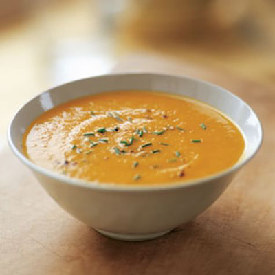

My Favorite Food

Carrot Ginger Soup
This soup is SOUPer good
Ingredients
- Carrots
- Ginger
- Cauliflower
- Chicken broth
- Coconut Milk
- Onion
- Garlic
- Olive Oil
- Spices - Salt, Tumeric, Paprika, Cayenne
Instructions
- Sautee onions and garlic with olive oil
- Cut carrots and ginger and add with more oil
- Cut cauliflower into small bits and add to sautee with all of the spices
- Once vegatables are fully cooked, add Chicken Broth and coconut milk and let cook for another 15-20minutes
- Use emersion blender to make soup into a puree
- Serve and enjoy!
For more information check out This site